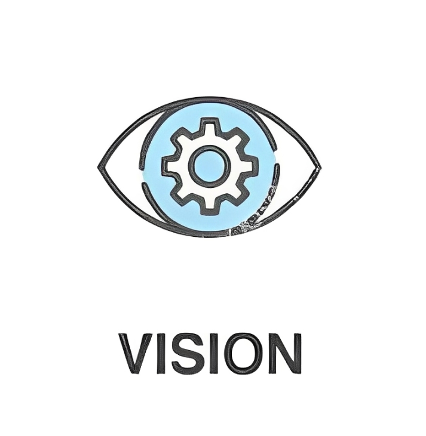
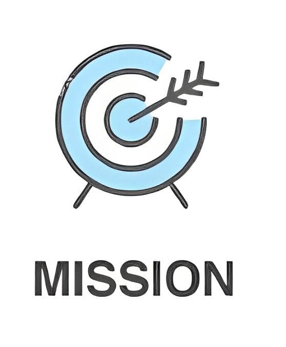

|
KAMI BERKOMITMEN UNTUK MEMBERIKAN LAYANAN PROFESIONAL TERBAIKSebagai Negara infrastruktur yang kepulauan,Indonesia membutuhkan baik dan dapat diandalkan untuk mendukung pembangunan ekonomi. PT.CITRA MULTI DATA (CMD)berkomitman aman,handal efisien untuk dan PT.CITRA memberikan kompetitif |
|  |
VISI KAMIMenjadikan PT CMD sebagai perusahaan Mecanikal Elektrikan dan telekomunikasi,dalam bidang pengadaan dan jasa engineering yang terkemuka khususnya dibidang jasa instalasi,testing,commisioning,jasa pengerjaan sarana dan prasarana.Menjadikan sebuah perusahaan yang mampu bersaing dalam era saat ini (4,0) serta memberikan kontribusi kepada masyarakat |
|  |
MISI KAMI |